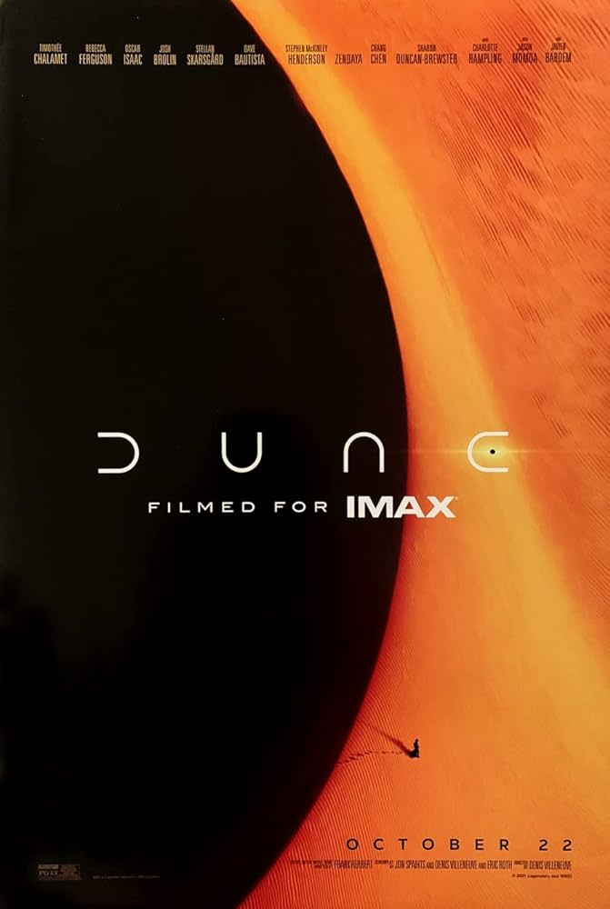
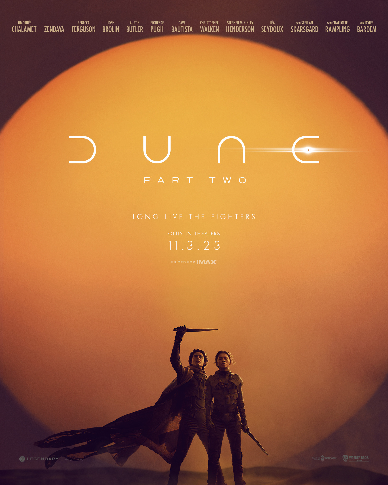

Dune parte 1Dune", el periplo de un héroe mítico y con una enorme carga emocional, cuenta la historia de Paul Atreides. Se trata de un joven brillante y de gran talento con un destino grandioso que no comprende todavía y que deberá viajar al planeta más peligroso del universo para asegurar el futuro de su familia y de su pueblo. Mientras las fuerzas del mal se enfrentan por uno de los recursos más excepcionales del planeta que tiene el poder de desbloquear todo el potencial de la humanidad, solo los que logren dominar sus miedos podrán sobrevivir.  |
Dune parte 2Dune 2' explorará el viaje mítico de Paul Atreides mientras se une a Chani y los Fremen en una guerra de venganza contra los conspiradores que destruyeron su familia. Al enfrentarse a una elección entre el amor de su vida y el destino del universo conocido, se esfuerza por evitar un futuro terrible que solo él puede prever  |